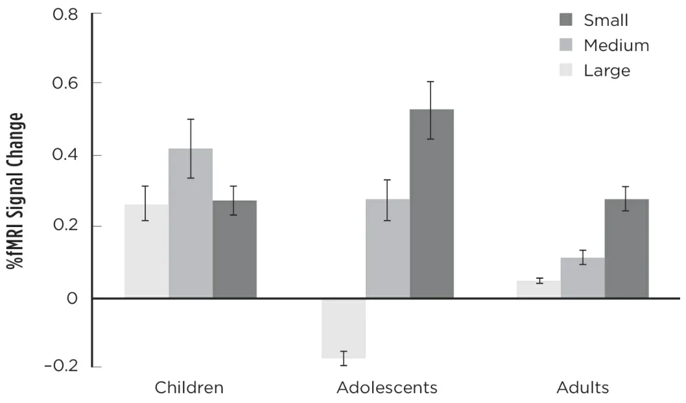

Chương 6 — Tuổi vị thành niên; hay, Này anh bạn, vỏ não trán của tôi đâu rồi?
Sáu
Tuổi vị thành niên; hay, Này anh bạn, Vỏ não trán của tôi đâu rồi?
Chương này là chương đầu tiên trong hai chương tập trung vào sự phát triển. Chúng ta đã thiết lập nhịp điệu quen thuộc: một hành vi vừa mới xảy ra; những sự kiện nào trong vài giây, vài phút, vài giờ trước đó... đã góp phần tạo nên nó? Chương tiếp theo sẽ mở rộng nhịp điệu này sang lĩnh vực phát triển—những gì đã xảy ra trong thời thơ ấu và đời sống bào thai của cá nhân đó đã góp phần dẫn đến hành vi ấy?
Chương hiện tại phá vỡ nhịp điệu này để tập trung vào tuổi vị thành niên. Liệu cơ chế sinh học được giới thiệu trong các chương trước có hoạt động khác đi ở một thiếu niên so với một người trưởng thành, từ đó tạo ra những hành vi khác biệt hay không? Có.
Có một sự thật chi phối toàn bộ chương này. Chương 5 đã bác bỏ giáo điều cho rằng não bộ người trưởng thành là bất biến. Một giáo điều khác là não bộ gần như đã được kết nối hoàn chỉnh từ rất sớm trong thời thơ ấu—suy cho cùng, đến hai tuổi, não bộ đã đạt khoảng 85 phần trăm thể tích của người lớn. Nhưng quỹ đạo phát triển thực tế chậm hơn thế nhiều. Sự thật cốt lõi của chương này là vùng não cuối cùng trưởng thành hoàn toàn (về số lượng khớp thần kinh, quá trình myelin hóa và chuyển hóa) chính là vỏ não trán, và nó chỉ hoạt động hết công suất vào khoảng giữa độ tuổi hai mươi.1
Điều này mang lại hai hệ quả vô cùng quan trọng. Thứ nhất, không có phần nào của não bộ người trưởng thành chịu ảnh hưởng bởi tuổi vị thành niên nhiều hơn vỏ não trán. Thứ hai, không có điều gì về tuổi vị thành niên có thể được hiểu thấu đáo nếu tách rời khỏi bối cảnh trưởng thành muộn của vỏ não trán. Nếu đến tuổi vị thành niên, các hệ limbic, thần kinh tự chủ và nội tiết đã hoạt động hết tốc lực trong khi vỏ não trán vẫn còn đang loay hoay đọc hướng dẫn lắp ráp, thì chúng ta vừa lý giải được tại sao thanh thiếu niên lại vừa gây ức chế, vừa tuyệt vời, vừa ngớ ngẩn, bốc đồng, truyền cảm hứng, phá hoại, tự hủy hoại, vị tha, ích kỷ, bất khả thi, và có khả năng thay đổi thế giới đến thế. Hãy nghĩ về điều này—tuổi vị thành niên và đầu tuổi trưởng thành là giai đoạn mà một người có nhiều khả năng nhất để giết người, bị giết, bỏ nhà đi mãi mãi, sáng tạo ra một loại hình nghệ thuật, góp phần lật đổ một nhà độc tài, thanh trừng sắc tộc một ngôi làng, dấn thân vì người nghèo, rơi vào nghiện ngập, kết hôn ngoài nhóm của mình, làm biến đổi vật lý học, có gu thời trang thảm họa, gãy cổ vì trò chơi mạo hiểm, dâng hiến cuộc đời cho Chúa, cướp giật một bà lão, hoặc tin chắc rằng toàn bộ lịch sử đã hội tụ để biến khoảnh khắc này thành thời điểm hệ trọng nhất, đầy rẫy hiểm nguy và hứa hẹn nhất, đòi hỏi họ phải nhập cuộc và tạo nên sự khác biệt. Nói cách khác, đó là giai đoạn của cuộc đời với mức độ chấp nhận rủi ro, tìm kiếm sự mới lạ và gắn kết với bạn bè đồng trang lứa ở mức tối đa. Tất cả đều do vỏ não trán chưa trưởng thành kia mà ra.
THỰC TẾ CỦA TUỔI VỊ THÀNH NIÊN
Tuổi vị thành niên có thực sự tồn tại không? Liệu có điều gì khác biệt về mặt chất giúp phân biệt nó với giai đoạn trước và sau đó, thay vì chỉ là một phần của quá trình chuyển tiếp êm ả từ thời thơ ấu sang tuổi trưởng thành? Có lẽ “tuổi vị thành niên” chỉ là một kiến tạo văn hóa—ở phương Tây, khi dinh dưỡng và y tế tốt hơn dẫn đến dậy thì sớm hơn, còn các yếu tố giáo dục và kinh tế của thời hiện đại lại đẩy việc sinh con sang độ tuổi muộn hơn, một khoảng trống phát triển đã xuất hiện giữa hai cột mốc ấy. Voilà! Thế là tuổi vị thành niên ra đời.*2
Như chúng ta sẽ thấy, sinh học thần kinh cho thấy tuổi vị thành niên là có thật, rằng bộ não thiếu niên không đơn thuần là một bộ não người lớn nấu chưa chín tới hay một bộ não trẻ con để ngoài tủ lạnh quá lâu. Hơn nữa, hầu hết các nền văn hóa truyền thống đều công nhận tuổi vị thành niên là một giai đoạn riêng biệt, tức là nó mang lại một số nhưng không phải tất cả quyền lợi và trách nhiệm của người trưởng thành. Tuy nhiên, thứ mà phương Tây đã phát minh ra chính là giai đoạn vị thành niên dài nhất.*
Điều có vẻ là sản phẩm của các nền văn hóa cá nhân chủ nghĩa chính là việc coi tuổi vị thành niên như một thời kỳ xung đột giữa các thế hệ; giới trẻ ở các nền văn hóa tập thể dường như ít có xu hướng đảo mắt ngán ngẩm trước sự ngớ ngẩn của người lớn, bắt đầu từ cha mẹ mình. Hơn nữa, ngay cả trong các nền văn hóa cá nhân chủ nghĩa, tuổi vị thành niên cũng không phải lúc nào cũng là thời kỳ nổi loạn tâm lý hay giông bão nội tâm (Sturm und Drang). Hầu hết chúng ta đều vượt qua nó một cách êm đẹp.
CƠ CHẾ CỐT LỖI CỦA QUÁ TRÌNH TRƯỞNG THÀNH VỎ NÃO TRÁN
Việc vỏ não trán trưởng thành muộn gợi lên một kịch bản hiển nhiên, đó là vào đầu tuổi vị thành niên, vỏ não trán có ít nơ-ron, nhánh sợi gai và khớp thần kinh hơn so với tuổi trưởng thành, và các mức độ này tăng dần cho đến giữa tuổi hai mươi. Thực tế thì ngược lại, chúng giảm đi.
Điều này xảy ra nhờ một cơ chế thực sự thông minh được tiến hóa ở não bộ động vật có vú. Đáng kinh ngạc là não thai nhi tạo ra lượng nơ-ron nhiều hơn hẳn so với não người trưởng thành. Tại sao? Trong giai đoạn cuối của sự phát triển thai nhi, có một cuộc cạnh tranh khốc liệt diễn ra ở phần lớn não bộ, trong đó những nơ-ron chiến thắng là những nơ-ron di cư đến đúng vị trí và tối đa hóa các kết nối khớp thần kinh với các nơ-ron khác. Còn những nơ-ron không đạt chuẩn thì sao? Chúng trải qua quá trình “chết tế bào theo chương trình”—các gen được kích hoạt khiến chúng teo lại và chết đi, vật chất của chúng sau đó được tái chế. Việc sản xuất dư thừa nơ-ron rồi cắt tỉa cạnh tranh (được gọi là “thuyết Darwin thần kinh”) đã cho phép tiến hóa nên những mạch thần kinh tối ưu hơn—một trường hợp mà ít hơn lại tốt hơn.
Điều tương tự cũng xảy ra ở vỏ não trán tuổi vị thành niên. Vào đầu tuổi vị thành niên, thể tích chất xám (một thước đo gián tiếp tổng số nơ-ron và nhánh sợi gai) và số lượng khớp thần kinh lớn hơn ở người lớn; trong thập kỷ tiếp theo, độ dày chất xám giảm dần khi các nhánh sợi gai và kết nối kém tối ưu bị cắt tỉa đi.*3 Trong vỏ não trán, các tiểu vùng cổ xưa nhất về mặt tiến hóa trưởng thành trước; còn vùng PFC lưng bên (nhận thức) mới toanh thậm chí còn chưa bắt đầu giảm thể tích chất xám cho đến cuối tuổi vị thành niên. Tầm quan trọng của mô hình phát triển này đã được chứng minh trong một nghiên cứu mang tính bước ngoặt, trong đó trẻ em được chụp ảnh thần kinh và kiểm tra IQ lặp đi lặp lại cho đến tuổi trưởng thành. Thời gian tích lũy độ dày chất xám vỏ não ở đầu tuổi vị thành niên trước khi quá trình cắt tỉa bắt đầu càng kéo dài, chỉ số IQ khi trưởng thành càng cao.
Như vậy, sự trưởng thành của vỏ não trán trong tuổi vị thành niên là câu chuyện về một bộ não hiệu quả hơn, chứ không phải nhiều não hơn. Điều này được thể hiện trong các nghiên cứu chụp ảnh thần kinh rất dễ bị hiểu nhầm khi so sánh thanh thiếu niên và người lớn.4 Một chủ đề thường thấy là người lớn có khả năng kiểm soát điều hành hành vi tốt hơn thanh thiếu niên trong một số nhiệm vụ và đồng thời cho thấy mức độ kích hoạt vỏ não trán cao hơn. Giờ hãy tìm một nhiệm vụ mà ở đó, một cách bất thường, thanh thiếu niên đạt được mức độ kiểm soát điều hành ngang bằng với người lớn. Trong những tình huống đó, thanh thiếu niên lại cho thấy mức độ kích hoạt vùng trán nhiều hơn người lớn—mức điều chỉnh tương đương đòi hỏi ít nỗ lực hơn ở một vỏ não trán người lớn đã được cắt tỉa gọn gàng.
Việc vỏ não trán của thiếu niên vẫn chưa đạt đến độ tinh gọn và sắc bén còn được chứng minh qua nhiều cách khác. Ví dụ, thanh thiếu niên chưa đạt đến trình độ của người lớn trong việc nhận diện sự mỉa mai, và khi cố gắng làm điều đó, họ kích hoạt vùng dmPFC nhiều hơn người lớn. Ngược lại, người lớn cho thấy sự kích hoạt mạnh hơn ở vùng nhận diện khuôn mặt hình thoi (fusiform face region). Nói cách khác, nhận diện sự mỉa mai không còn là một nhiệm vụ nặng nề của vùng trán đối với người lớn; chỉ cần một cái nhìn vào khuôn mặt là đủ.5
Thế còn chất trắng trong vỏ não trán (thước đo gián tiếp của quá trình myelin hóa sợi trục) thì sao? Ở đây mọi thứ khác với cách tiếp cận sản xuất thừa rồi cắt tỉa của chất xám; thay vào đó, các sợi trục được myelin hóa xuyên suốt tuổi vị thành niên. Như đã thảo luận ở phụ lục 1, điều này cho phép các nơ-ron giao tiếp nhanh hơn và phối hợp nhịp nhàng hơn—khi tuổi vị thành niên tiến triển, hoạt động ở các phần khác nhau của vỏ não trán trở nên đồng bộ hơn khi vùng này vận hành như một đơn vị chức năng thống nhất hơn.6
Điều này rất quan trọng. Khi học về khoa học thần kinh, ta dễ tập trung vào từng vùng não riêng lẻ như những thực thể tách biệt về chức năng (và xu hướng này càng nặng hơn nếu bạn dành cả sự nghiệp chỉ để nghiên cứu một vùng trong số đó). Bằng chứng cho điều này là có hẳn hai tạp chí y sinh uy tín, một tạp chí tên là Cortex (Vỏ não), tạp chí kia là Hippocampus (Hồi hải mã), mỗi nơi chuyên đăng các bài báo về vùng não yêu thích của mình. Tại các hội nghị khoa học thần kinh có hàng chục nghìn người tham dự, sẽ có những buổi giao lưu riêng cho tất cả những ai nghiên cứu cùng một vùng não ít người biết đến, nơi họ có thể buôn chuyện, gắn kết và tán tỉnh nhau. Nhưng thực tế, bộ não là câu chuyện của các mạch kết nối, của các mô hình kết nối chức năng giữa các vùng. Quá trình myelin hóa ngày càng tăng của bộ não thiếu niên cho thấy tầm quan trọng của sự gia tăng kết nối này.
Điều thú vị là các phần khác của bộ não thiếu niên dường như ra tay hỗ trợ vỏ não trán chưa phát triển hoàn thiện, đảm nhận một số vai trò mà nó chưa sẵn sàng gánh vác. Ví dụ, ở thanh thiếu niên nhưng không phải ở người lớn, thể vân bụng (ventral striatum) giúp điều hòa cảm xúc; chúng ta sẽ quay lại vấn đề này.7
Có một yếu tố khác khiến vỏ não trán non nớt đó mất thăng bằng, đó là estrogen và progesterone ở nữ giới cùng testosterone ở nam giới. Như đã thảo luận ở chương 4, các hormone này làm thay đổi cấu trúc và chức năng não bộ, bao gồm cả ở vỏ não trán, nơi các hormone sinh dục làm thay đổi tốc độ myelin hóa và mật độ thụ thể của nhiều chất dẫn truyền thần kinh khác nhau. Hợp lý là các cột mốc trưởng thành ở tuổi vị thành niên về não bộ và hành vi ít liên quan đến tuổi theo lịch hơn là khoảng thời gian tính từ lúc bắt đầu dậy thì.8
Hơn nữa, dậy thì không chỉ là sự ập đến ồ ạt của các hormone sinh dục. Nó còn là cách chúng bắt đầu vận hành.9 Đặc điểm nổi bật của chức năng nội tiết buồng trứng là tính chu kỳ của việc giải phóng hormone—“Đến ngày ấy trong tháng rồi.” Ở thiếu nữ vị thành niên, tuổi dậy thì không đến một cách trọn vẹn ngay lập tức với kỳ kinh nguyệt đầu tiên. Thay vào đó, trong vài năm đầu, chỉ khoảng một nửa số chu kỳ thực sự có sự rụng trứng và tăng vọt estrogen cùng progesterone. Như vậy, các thiếu niên trẻ không chỉ đang trải qua những chu kỳ rụng trứng đầu tiên này, mà còn có những dao động bậc cao hơn về việc liệu sự dao động rụng trứng đó có xảy ra hay không. Trong khi đó, dù các thiếu niên nam không có những biến động hormone tương đương, việc vỏ não trán của họ liên tục bị thiếu oxy do máu dồn xuống vùng hạ bộ hẳn cũng chẳng giúp ích gì.
Do đó, khi tuổi vị thành niên bắt đầu, hiệu quả của vỏ não trán bị pha loãng bởi những khớp thần kinh thừa thãi không đạt chuẩn, sự giao tiếp chậm chạp do chưa được myelin hóa đầy đủ, và một mớ các tiểu vùng thiếu phối hợp hoạt động chéo ngoe nhau; hơn nữa, dù thể vân đang cố gắng giúp sức, một người đánh thay cho vỏ não trán cũng chỉ gánh được đến thế mà thôi. Cuối cùng, vỏ não trán còn bị ngâm trong dòng thủy triều lên xuống của các hormone sinh dục. Chẳng trách họ hành xử rất “tuổi teen”.
Những Thay Đổi của Vỏ Não Trán trong Nhận Thức ở Tuổi Vị Thành Niên
Để hiểu được sự trưởng thành của vỏ não trán liên quan gì đến những hành vi tốt nhất và tệ nhất của chúng ta, trước tiên hãy xem quá trình trưởng thành đó diễn ra như thế nào trong lĩnh vực nhận thức.
Trong suốt tuổi vị thành niên, có sự cải thiện đều đặn về trí nhớ làm việc, khả năng sử dụng quy tắc linh hoạt, tổ chức điều hành và điều chỉnh ức chế của vùng trán (ví dụ: chuyển đổi nhiệm vụ). Nhìn chung, những cải thiện này đi kèm với sự gia tăng hoạt động ở các vùng trán trong khi thực hiện nhiệm vụ, và mức độ gia tăng đó dự báo độ chính xác.10
Thanh thiếu niên cũng cải thiện ở các nhiệm vụ tâm trí hóa (mentalization—hiểu góc nhìn của người khác). Ở đây tôi không nói đến góc nhìn cảm xúc (hãy chờ xem ở phần sau) mà là những thử thách nhận thức thuần túy hơn, như hiểu xem các đồ vật trông như thế nào từ góc nhìn của người khác. Sự cải thiện trong việc nhận diện sự mỉa mai phản ánh sự tiến bộ trong khả năng đặt mình vào góc nhìn nhận thức trừu tượng.
Những Thay Đổi của Vỏ Não Trán trong Điều Hòa Cảm Xúc
Thanh thiếu niên lớn tuổi hơn trải nghiệm cảm xúc mãnh liệt hơn trẻ em hoặc người lớn, điều hiển nhiên với bất kỳ ai từng trải qua thời niên thiếu. Ví dụ, họ phản ứng mạnh hơn với những khuôn mặt biểu lộ cảm xúc mạnh.*11 Ở người lớn, việc nhìn vào một “biểu hiện cảm xúc trên khuôn mặt” kích hoạt hạch hạnh nhân (amygdala), tiếp theo là sự kích hoạt của vùng vmPFC điều hòa cảm xúc khi họ quen dần với nội dung cảm xúc đó. Tuy nhiên, ở tuổi vị thành niên, phản ứng của vmPFC yếu hơn; do đó phản ứng của hạch hạnh nhân cứ thế tăng lên.
Chương 2 đã giới thiệu khái niệm “tái đánh giá” (reappraisal), trong đó các phản ứng trước những kích thích cảm xúc mạnh được điều chỉnh bằng cách suy nghĩ về chúng theo một hướng khác.12 Bị điểm kém trong một kỳ thi, và sẽ có một lực kéo cảm xúc hướng về suy nghĩ “Mình thật ngu ngốc”; tái đánh giá có thể dẫn bạn tập trung thay vào đó vào việc bạn đã không học bài hoặc đang bị cảm lạnh, để quyết định rằng kết quả đó là do hoàn cảnh, chứ không phải do bản chất bất biến của bạn.
Các chiến lược tái đánh giá trở nên tốt hơn trong tuổi vị thành niên, với nền tảng sinh học thần kinh rất hợp lý. Hãy nhớ lại rằng ở đầu tuổi vị thành niên, thể vân bụng, với nỗ lực giúp đỡ, đã đảm nhận một số nhiệm vụ của vùng trán (khá kém hiệu quả, vì nó đang làm việc vượt quá tầm khả năng của mình). Ở độ tuổi đó, việc tái đánh giá huy động thể vân bụng; mức độ kích hoạt càng cao thì mức kích hoạt hạch hạnh nhân càng thấp và khả năng điều hòa cảm xúc càng tốt. Khi thiếu niên trưởng thành hơn, vỏ não trước trán tiếp quản nhiệm vụ này, và cảm xúc trở nên ổn định hơn.*13
Việc đưa thể vân vào bức tranh lại gợi nhắc đến dopamine và phần thưởng, từ đó dẫn đến sở thích nhảy bungee của thanh thiếu niên.
CHẤP NHẬN RỦI RO Ở TUỔI VỊ THÀNH NIÊN
Dưới chân dãy núi Sierra là hệ thống hang động California Caverns, nơi sau một đoạn chui xuống hố hẹp, ngoằn ngoèo dài 30 feet ban đầu, sẽ dẫn tới một vách đá dựng đứng sâu 180 feet (nay có thể đu dây xuống). Cơ quan Công viên đã tìm thấy những bộ xương dưới đáy có niên đại hàng thế kỷ, của những nhà thám hiểm đã bước quá một bước trong bóng tối. Và những bộ xương đó luôn là của thanh thiếu niên.
Như đã được chứng minh bằng thực nghiệm, khi đưa ra quyết định mạo hiểm, thanh thiếu niên kích hoạt vỏ não trước trán ít hơn người lớn; hoạt động càng ít, việc đánh giá rủi ro càng kém. Sự đánh giá kém này mang một hình thái đặc thù, như nghiên cứu của Sarah-Jayne Blakemore tại Đại học College London đã chỉ ra.14 Yêu cầu người tham gia ước tính khả năng xảy ra một sự kiện nào đó (trúng số, chết trong tai nạn máy bay); sau đó nói cho họ biết xác suất thực tế. Phản hồi đó có thể là tin tốt (tức là một điều tốt thực sự có khả năng xảy ra cao hơn mức người đó ước tính, hoặc một điều xấu ít có khả năng xảy ra hơn). Ngược lại, phản hồi có thể là tin xấu. Yêu cầu họ ước tính lại khả năng xảy ra của chính những sự kiện đó. Người lớn đưa phản hồi vào các ước tính mới của mình. Thanh thiếu niên cập nhật ước tính giống người lớn đối với tin tốt, nhưng phản hồi về tin xấu hầu như không tác động gì. (Nhà nghiên cứu: “Khả năng bạn bị tai nạn xe hơi nếu lái xe khi say rượu là bao nhiêu?” Thiếu niên: “Một phần tỷ tỷ.” Nhà nghiên cứu: “Thực tế thì nguy cơ là khoảng 50 phần trăm; giờ bạn nghĩ cơ hội của chính mình là bao nhiêu?” Thiếu niên: “Này, chúng ta đang nói về tôi đấy; một phần tỷ tỷ.”) Chúng ta vừa giải thích xong lý do tại sao thanh thiếu niên có tỷ lệ nghiện cờ bạc bệnh lý cao gấp hai đến bốn lần người lớn.15
Vậy là thanh thiếu niên chấp nhận nhiều rủi ro hơn và cực kỳ tệ trong việc đánh giá rủi ro. Nhưng không chỉ có chuyện thanh thiếu niên sẵn sàng mạo hiểm hơn. Suy cho cùng, không phải thanh thiếu niên và người lớn đều khao khát làm điều gì đó mạo hiểm như nhau và người lớn chỉ đơn giản là không làm vì vỏ não trán đã trưởng thành. Có một sự khác biệt về tuổi tác trong loại cảm giác được tìm kiếm—thanh thiếu niên bị cám dỗ bởi trò nhảy bungee; người lớn bị cám dỗ bởi việc ăn gian chế độ ăn ít muối. Tuổi vị thành niên không chỉ đặc trưng bởi việc chấp nhận rủi ro nhiều hơn mà còn bởi việc tìm kiếm sự mới lạ nhiều hơn nữa.*16
Sự thèm khát cái mới thấm đẫm tuổi vị thành niên; đó là lúc chúng ta thường hình thành gu ổn định về âm nhạc, ẩm thực và thời trang, với sự cởi mở đối với cái mới giảm dần sau đó.17 Và đó không chỉ là hiện tượng của riêng con người. Trong suốt vòng đời của loài gặm nhấm, chính những con non vị thành niên là những con sẵn sàng ăn một loại thức ăn mới nhất. Việc tìm kiếm sự mới lạ ở tuổi vị thành niên đặc biệt mạnh mẽ ở các loài linh trưởng khác. Ở nhiều loài thú có vú sống theo bầy, cá thể vị thành niên của một giới tính sẽ rời bỏ nhóm sinh ra, di cư sang một quần thể khác, một phương thức kinh điển để tránh giao phối cận huyết. Ở loài linh dương impala có các nhóm gồm những con cái có quan hệ huyết thống và con non cùng một con đực đầu đàn sinh sản; những con đực khác lảng vảng ủ rũ trong các “bầy độc thân”, mỗi con đều âm mưu soán ngôi con đực sinh sản. Khi một con đực non bước vào tuổi dậy thì, nó bị con đực sinh sản đuổi khỏi nhóm (và để tránh những suy diễn vớ vẩn kiểu Oedipus, con đực này khó có thể là cha nó, vì cha nó đã trị vì từ nhiều đời con đực sinh sản trước đó rồi).
Nhưng ở loài linh trưởng thì không như vậy. Hãy lấy loài khỉ đầu chó làm ví dụ. Giả sử hai bầy chạm trán nhau tại một ranh giới tự nhiên—chẳng hạn một con suối. Những con đực đe dọa nhau một lúc, cuối cùng chán và quay lại làm việc của mình. Ngoại trừ một con khỉ vị thành niên, đứng bên bờ suối, mắt dán chặt không rời. Những con khỉ đầu chó mới, cả một bầy luôn! Nó chạy năm bước về phía họ, rồi chạy lùi bốn bước, bồn chồn, lo âu. Nó rón rén băng qua và ngồi bên bờ kia, hốt hoảng chạy vụt lại nếu có con khỉ mới nào liếc nhìn nó.
Thế là bắt đầu quá trình chuyển bầy chậm chạp, mỗi ngày dành nhiều thời gian hơn với bầy mới cho đến khi nó cắt đứt hoàn toàn sợi dây rốn và ở lại qua đêm. Nó không bị đuổi đi. Thay vào đó, nếu phải sống thêm một ngày nữa với những con khỉ đầu chó đơn điệu mà nó đã biết suốt đời, chắc nó phát điên mất. Ở tinh tinh vị thành niên thì chính những con cái mới là kẻ không thể rời bỏ trang trại đủ nhanh. Loài linh trưởng chúng ta không bị xua đuổi ở tuổi vị thành niên. Thay vào đó, chúng ta khao khát sự mới lạ một cách điên cuồng.*
Như vậy, tuổi vị thành niên là câu chuyện của việc chấp nhận rủi ro và tìm kiếm sự mới lạ. Hệ thống phần thưởng dopamine đóng vai trò gì ở đây?
Hãy nhớ lại từ chương 2 cách vùng trần bụng (ventral tegmentum) là nguồn gốc của đường dẫn truyền dopamine trung não–hệ viền (mesolimbic) tới nhân nằm (nucleus accumbens), và đường dẫn truyền dopamine trung não–vỏ não (mesocortical) tới vỏ não trán. Trong suốt tuổi vị thành niên, mật độ đường dẫn truyền và tín hiệu dopamine tăng đều đặn ở cả hai con đường (mặc dù bản thân việc tìm kiếm sự mới lạ đạt đỉnh ở giữa tuổi vị thành niên, có lẽ phản ánh sự điều chỉnh của vùng trán bắt đầu xuất hiện sau đó).18

Những thay đổi về mức độ hoạt động dopaminergic tại “trung tâm phần thưởng” của não bộ sau các mức độ phần thưởng khác nhau. Đối với thanh thiếu niên, đỉnh cao thì cao hơn, vực sâu thì sâu hơn.
Truy cập bit.ly/2o3TBI8 để xem phiên bản lớn hơn của biểu đồ này.
Vẫn chưa rõ có bao nhiêu dopamine được giải phóng khi kỳ vọng phần thưởng. Một số nghiên cứu cho thấy sự kích hoạt dự báo của các con đường phần thưởng ở thanh thiếu niên cao hơn ở người lớn, trong khi các nghiên cứu khác lại cho thấy điều ngược lại, với mức độ đáp ứng dopaminergic thấp nhất ở những thanh thiếu niên chấp nhận rủi ro nhiều nhất.19
Sự khác biệt về tuổi tác trong mức độ dopamine tuyệt đối ít thú vị hơn sự khác biệt trong mô hình giải phóng. Trong một nghiên cứu tuyệt vời, trẻ em, thanh thiếu niên và người lớn nằm trong máy quét não thực hiện một nhiệm vụ mà các câu trả lời đúng mang lại phần thưởng tiền tệ với kích thước khác nhau (xem hình trên).20 Trong quá trình này, sự kích hoạt vùng trước trán ở cả trẻ em và thanh thiếu niên đều lan tỏa và thiếu tập trung. Tuy nhiên, sự kích hoạt ở nhân nằm của thanh thiếu niên lại rất đặc trưng. Ở trẻ em, một câu trả lời đúng tạo ra mức tăng hoạt động gần như giống nhau bất kể kích thước phần thưởng. Ở người lớn, phần thưởng nhỏ, vừa và lớn gây ra mức tăng hoạt động nhân nằm nhỏ, vừa và lớn. Còn thanh thiếu niên thì sao? Sau một phần thưởng vừa, mọi thứ trông giống như ở trẻ em và người lớn. Một phần thưởng lớn tạo ra sự gia tăng khổng lồ, lớn hơn nhiều so với ở người lớn. Còn phần thưởng nhỏ thì sao? Hoạt động nhân nằm sụt giảm. Nói cách khác, thanh thiếu niên trải nghiệm những phần thưởng lớn hơn mong đợi một cách tích cực hơn người lớn, và trải nghiệm những phần thưởng nhỏ hơn mong đợi như một điều khó chịu. Như một con quay đang xoay tít, suýt văng ra khỏi tầm kiểm soát.
Điều này gợi ý rằng ở thanh thiếu niên, những phần thưởng mạnh tạo ra tín hiệu dopaminergic phóng đại, còn những phần thưởng hợp lý, chừng mực cho những hành động thận trọng lại mang lại cảm giác tồi tệ. Vỏ não trán chưa trưởng thành chẳng có cơ hội nào để chống lại một hệ thống dopamine như thế này. Nhưng có một điều khó hiểu.
Giữa những nơ-ron dopamine điên rồ, không kiềm chế đó, thanh thiếu niên lại có kỹ năng suy luận, trong nhiều lĩnh vực nhận thức rủi ro, ngang bằng với người lớn. Ấy vậy mà bất chấp điều đó, logic và lý trí thường bị vứt bỏ, và thanh thiếu niên vẫn hành xử rất “tuổi teen”. Công trình của Laurence Steinberg thuộc Đại học Temple đã xác định được một thời điểm then chốt mà thanh thiếu niên đặc biệt dễ nhảy trước khi nhìn: khi ở cạnh bạn bè đồng trang lứa.
BẠN BÈ ĐỒNG TRANG LỨA, SỰ CHẤP NHẬN XÃ HỘI VÀ SỰ TẨY CHAY XÃ HỘI
Tính dễ bị tổn thương của thanh thiếu niên trước áp lực từ bạn bè, đặc biệt là những người bạn mà họ muốn được chấp nhận kết bạn, đã trở thành chuyện ai cũng biết. Điều này cũng có thể được chứng minh bằng thực nghiệm. Trong một nghiên cứu của Steinberg, thanh thiếu niên và người lớn chấp nhận rủi ro với tỷ lệ như nhau trong một trò chơi điện tử lái xe. Việc thêm hai người bạn đồng trang lứa đứng cổ vũ không ảnh hưởng gì đến người lớn nhưng làm tăng gấp ba lần mức độ chấp nhận rủi ro ở thanh thiếu niên. Hơn nữa, trong các nghiên cứu chụp ảnh thần kinh, việc bạn bè cổ vũ (qua hệ thống liên lạc nội bộ) làm giảm hoạt động của vmPFC và tăng cường hoạt động của thể vân bụng ở thanh thiếu niên nhưng không xảy ra ở người lớn.21
Tại sao bạn bè đồng trang lứa của thanh thiếu niên lại có quyền lực xã hội lớn đến vậy? Trước hết, thanh thiếu niên có tính xã hội cao hơn và mang tính xã hội phức tạp hơn trẻ em hoặc người lớn. Ví dụ, một nghiên cứu năm 2013 cho thấy thanh thiếu niên có trung bình hơn bốn trăm bạn bè trên Facebook, nhiều hơn hẳn người lớn.22 Hơn nữa, tính xã hội của tuổi teen đặc biệt xoay quanh cảm xúc và khả năng phản ứng với các tín hiệu cảm xúc—hãy nhớ lại phản ứng hệ limbic mạnh hơn và vỏ não trán yếu hơn trước các khuôn mặt biểu lộ cảm xúc ở thanh thiếu niên. Và thanh thiếu niên không tích lũy bốn trăm bạn bè Facebook để lấy dữ liệu làm luận án tiến sĩ xã hội học. Thay vào đó là nhu cầu điên cuồng muốn được thuộc về.
Điều này tạo ra sự dễ bị tổn thương của tuổi teen trước áp lực đồng trang lứa và sự lây lan cảm xúc. Hơn nữa, áp lực đó thường là “huấn luyện lệch chuẩn” (deviance training), làm tăng nguy cơ bạo lực, lạm dụng chất kích thích, tội phạm, tình dục không an toàn và các thói quen sức khỏe kém (hiếm có băng nhóm thiếu niên nào ép bạn bè cùng dùng chỉ nha khoa rồi làm những việc tử tế ngẫu nhiên). Ví dụ, ở ký túc xá đại học, người bạn cùng phòng uống rượu quá độ có nhiều khả năng ảnh hưởng đến người bạn kiêng rượu hơn là ngược lại. Tỷ lệ rối loạn ăn uống ở thanh thiếu niên lan truyền trong nhóm bạn bè với mô hình giống như lây nhiễm virus. Điều tương tự cũng xảy ra với chứng trầm cảm ở nữ thiếu niên, phản ánh xu hướng “cùng nghiền ngẫm” (coruminate) về các vấn đề, củng cố cảm xúc tiêu cực cho nhau.
Các nghiên cứu chụp ảnh thần kinh cho thấy sự nhạy cảm đáng kinh ngạc của thanh thiếu niên đối với bạn bè đồng trang lứa. Hãy yêu cầu người lớn nghĩ về những gì họ hình dung người khác nghĩ về mình, rồi nghĩ về những gì bản thân họ nghĩ về chính mình. Hai mạng lưới cấu trúc vùng trán và hệ limbic khác nhau, chồng lấn một phần sẽ kích hoạt cho hai nhiệm vụ này. Nhưng với thanh thiếu niên, hai hồ sơ kích hoạt đó là giống hệt nhau. Câu hỏi “Bạn nghĩ gì về bản thân mình?” được não bộ trả lời bằng “Bất cứ điều gì mà mọi người khác nghĩ về tôi.”23
Nhu cầu điên cuồng muốn được thuộc về ở tuổi vị thành niên được thể hiện tuyệt đẹp trong các nghiên cứu về sinh học thần kinh của sự tẩy chay xã hội. Naomi Eisenberger của Đại học UCLA đã phát triển mô hình “Cyberball” cực kỳ thông minh nhưng tàn nhẫn để khiến người ta cảm thấy bị phớt lờ.24 Người tham gia nằm trong máy quét não, tin rằng mình đang chơi một trò chơi trực tuyến với hai người khác (tất nhiên, họ không tồn tại—đó là một chương trình máy tính). Mỗi người chơi chiếm một vị trí trên màn hình, tạo thành hình tam giác. Các người chơi chuyền một quả bóng ảo cho nhau; người tham gia chọn người để chuyền và tin rằng hai người kia cũng làm vậy. Quả bóng được chuyền qua lại một lúc; rồi, mà người tham gia không hay biết, thí nghiệm bắt đầu—hai người chơi kia ngừng chuyền bóng cho cô ấy. Cô ấy đang bị hai kẻ đáng ghét kia cô lập. Ở người lớn có sự kích hoạt của chất xám quanh cống (periaqueductal gray), vỏ não đai trước, hạch hạnh nhân và vỏ não đảo (insular cortex). Hoàn hảo—những vùng này giữ vai trò trung tâm trong cảm nhận nỗi đau, sự tức giận và ghê tởm.* Và rồi, sau một khoảng trễ, vỏ não trước trán bụng bên (vlPFC) kích hoạt; kích hoạt càng mạnh thì vỏ não đai và vỏ não đảo càng bị làm dịu đi và người tham gia càng báo cáo ít buồn bực hơn sau đó. Sự kích hoạt muộn của vlPFC này nói lên điều gì? “Sao mình lại bực mình nhỉ? Đây chỉ là một trò ném bóng ngớ ngẩn thôi mà.” Vỏ não trán đến giải cứu bằng góc nhìn rộng hơn, sự hợp lý hóa và điều hòa cảm xúc.
Giờ hãy thực hiện nghiên cứu này với thanh thiếu niên. Một số người cho thấy hồ sơ chụp ảnh thần kinh giống người lớn; đó là những người tự đánh giá mình ít nhạy cảm nhất với sự từ chối và dành nhiều thời gian nhất với bạn bè. Nhưng đối với hầu hết thanh thiếu niên, khi sự tẩy chay xã hội xảy ra, vlPFC hầu như không kích hoạt; các thay đổi khác đều lớn hơn ở người lớn, và người tham gia báo cáo cảm thấy tồi tệ hơn—thanh thiếu niên thiếu lực đẩy đủ mạnh của vùng trán để có thể gạt phắt đi một cách hiệu quả rằng tại sao chuyện đó chẳng đáng bận tâm. Sự từ chối làm thanh thiếu niên đau đớn hơn, tạo ra nhu cầu hòa nhập mạnh mẽ hơn đó.25
Một nghiên cứu chụp ảnh thần kinh đã xem xét một viên gạch nền tảng thần kinh của sự tuân thủ đám đông.26 Khi bạn nhìn một bàn tay đang cử động, các nơ-ron ở các vùng tiền vận động góp phần điều khiển bàn tay của chính bạn sẽ trở nên hơi kích hoạt—não bạn đang ở ngưỡng bắt chước chuyển động đó. Trong nghiên cứu, trẻ mười tuổi xem các đoạn phim quay cảnh cử động bàn tay hoặc biểu cảm khuôn mặt; những em dễ bị ảnh hưởng bởi bạn bè đồng trang lứa nhất (được đánh giá trên thang đo do Steinberg phát triển)* có mức kích hoạt tiền vận động cao nhất—nhưng chỉ đối với các biểu cảm cảm xúc trên khuôn mặt. Nói cách khác, những đứa trẻ nhạy cảm hơn với áp lực đồng trang lứa sẵn sàng bắt chước cảm xúc của người khác hơn. (Xét theo độ tuổi của đối tượng nghiên cứu, các tác giả định khung phát hiện của họ như một yếu tố có khả năng dự báo hành vi tuổi teen sau này.)*
Mức độ giải thích mang tính nguyên tử này về sự tuân thủ đám đông có thể dự đoán phần nào việc thiếu niên nào có khả năng tham gia vào một cuộc bạo loạn. Nhưng nó không cho biết nhiều về việc ai chọn không mời một người đến bữa tiệc chỉ vì nhóm bạn sành điệu nghĩ cô ấy là kẻ thất bại.
Một nghiên cứu khác cho thấy các tương quan sinh học thần kinh của sự tuân thủ đồng trang lứa mang tính trừu tượng hơn. Hãy nhớ lại cách thể vân bụng ở tuổi vị thành niên giúp vỏ não trán tái đánh giá sự tẩy chay xã hội. Trong nghiên cứu này, những thiếu niên trẻ tuổi kiên cường nhất trước ảnh hưởng của bạn bè có phản ứng thể vân bụng mạnh mẽ nhất. Và một thể vân bụng mạnh mẽ hơn có thể bắt nguồn từ đâu? Đến giờ bạn đã biết câu trả lời rồi đấy: bạn sẽ thấy rõ trong các chương còn lại.
THẤU CẢM, ĐỒNG CẢM VÀ LẬP LUẬN ĐẠO ĐỨC
Đến tuổi vị thành niên, mọi người thường khá giỏi trong việc đặt mình vào góc nhìn của người khác, nhìn thế giới như cách một người khác nhìn. Đó thường là lúc bạn lần đầu tiên nghe những câu như “Chà, tôi vẫn không đồng ý, nhưng tôi có thể hiểu tại sao anh ấy lại cảm thấy như vậy, xét theo trải nghiệm của anh ấy.”
Tuy nhiên, thanh thiếu niên vẫn chưa phải là người lớn. Không giống người lớn, họ vẫn giỏi đặt mình vào góc nhìn ngôi thứ nhất hơn là ngôi thứ ba (“Bạn sẽ cảm thấy thế nào trong hoàn cảnh của cô ấy?” so với “Cô ấy cảm thấy thế nào trong hoàn cảnh của mình?”).27 Các phán đoán đạo đức của thanh thiếu niên, dù ngày càng tinh tế hơn, vẫn chưa đạt đến mức độ của người lớn. Thanh thiếu niên đã bỏ lại phía sau xu hướng bình quân chủ nghĩa của trẻ nhỏ là chia đều tài nguyên. Thay vào đó, thanh thiếu niên chủ yếu đưa ra các quyết định theo chế độ thực tài (meritocratic—có pha trộn chút quan điểm vị lợi và tự do cá nhân); tư duy thực tài tinh tế hơn bình quân chủ nghĩa, vì bình quân chủ nghĩa chỉ quan tâm đến kết quả, trong khi thực tài kết hợp suy nghĩ về nguyên nhân. Tuy nhiên, tư duy thực tài của thanh thiếu niên kém phức tạp hơn của người lớn—ví dụ, thanh thiếu niên thành thạo như người lớn trong việc hiểu hoàn cảnh cá nhân tác động đến hành vi như thế nào, nhưng không hiểu được các hoàn cảnh mang tính hệ thống.
Khi thanh thiếu niên trưởng thành, họ ngày càng phân biệt rõ ràng giữa tổn hại cố ý và vô ý, coi tổn hại cố ý là tệ hơn.28 Khi suy ngẫm về tổn hại vô ý, lúc này có sự kích hoạt ít hơn ở ba vùng não liên quan đến xử lý nỗi đau, đó là hạch hạnh nhân, vỏ não đảo và các vùng tiền vận động (vùng cuối cùng phản ánh xu hướng nhăn mặt rùng mình khi nghe kể về nỗi đau bị gây ra). Trong khi đó, có sự gia tăng kích hoạt dlPFC và vmPFC khi suy ngẫm về tổn hại cố ý. Nói cách khác, việc thấu hiểu nỗi đau của một người bị làm hại một cách cố ý là một nhiệm vụ của vùng trán.
Khi thanh thiếu niên trưởng thành, họ cũng ngày càng phân biệt rõ giữa tổn hại đối với con người và tổn hại đối với đồ vật (với tổn hại đối với con người bị coi là tệ hơn); tổn hại đối với con người ngày càng kích hoạt hạch hạnh nhân, trong khi điều ngược lại xảy ra với tổn hại đối với đồ vật. Điều thú vị là khi thanh thiếu niên lớn lên, sự khác biệt trong mức độ trừng phạt được đề xuất đối với việc làm hư hại đồ vật cố ý và vô ý lại giảm đi. Nói cách khác, điểm mấu chốt về sự hư hại trở thành là, dù vô tình hay không, cái thứ chết tiệt đó vẫn cần phải được sửa chữa—dù có ít tiếng khóc than hơn vì sữa bị đổ, thì việc lau dọn vẫn chẳng bớt đi chút nào.*
Thế còn một trong những điều tuyệt vời nhất ở thanh thiếu niên, xét theo mối quan tâm của cuốn sách này—khả năng điên cuồng, sục sôi, rực cháy của họ trong việc cảm nhận nỗi đau của người khác, cảm nhận nỗi đau của tất cả mọi người, để cố gắng sửa chữa mọi thứ cho đúng đắn thì sao? Một chương sau sẽ phân biệt giữa đồng cảm (sympathy) và thấu cảm (empathy)—giữa việc cảm thương cho một người đang đau đớn và việc cảm nhận như thể mình chính là người đó. Thanh thiếu niên là những chuyên gia ở vế sau, nơi cường độ của việc cảm nhận như người khác có thể tiệm cận với việc trở thành người khác.
Cường độ này chẳng có gì đáng ngạc nhiên, vì nó nằm tại giao điểm của nhiều khía cạnh của tuổi vị thành niên. Có những cảm xúc dạt dào và những cơn cuộn xoáy của hệ limbic. Đỉnh cao thì cao hơn, vực sâu thì sâu hơn, nỗi đau thấu cảm bỏng rát, và ánh hào quang của việc làm điều đúng đắn khiến người ta thấy hợp lý rằng chúng ta có mặt trên đời là vì một mục đích. Một yếu tố góp phần nữa là sự cởi mở với cái mới. Một tâm trí cởi mở là điều kiện tiên quyết cho một trái tim rộng mở, và cơn đói trải nghiệm mới của tuổi vị thành niên cho phép họ đi hàng dặm trong đôi giày của rất nhiều người khác. Và còn có cái tôi vị kỷ của tuổi vị thành niên. Vào cuối thời niên thiếu, tôi từng giao du với những người theo giáo phái Quaker, và họ thỉnh thoảng dùng câu châm ngôn “Tất cả những gì Chúa có chỉ là ngươi.” Đây là vị Chúa có nguồn lực hữu hạn, không chỉ cần sự giúp đỡ của con người để sửa chữa một điều sai trái, mà cần chính bạn, chỉ riêng bạn mà thôi, để làm điều đó. Lời kêu gọi vào cái tôi vị kỷ này như được may đo riêng cho thanh thiếu niên. Cộng thêm nguồn năng lượng bất tận của tuổi trẻ cùng cảm giác toàn năng, và việc làm cho thế giới trở nên trọn vẹn dường như là điều hoàn toàn khả thi, vậy tại sao lại không thử?
Ở chương 13, chúng ta xem xét làm thế nào mà ngay cả năng lực cảm xúc cháy bỏng nhất cho sự thấu cảm hay lập luận đạo đức cao siêu nhất cũng không khiến một người có khả năng thực sự làm điều dũng cảm, khó khăn. Điều này làm nảy sinh một hạn chế tinh tế của sự thấu cảm ở tuổi vị thành niên.
Như sẽ thấy, một trường hợp mà phản ứng thấu cảm không nhất thiết dẫn đến hành động là khi chúng ta suy nghĩ đủ nhiều để hợp lý hóa (“Vấn đề này bị thổi phồng quá mức” hoặc “Sẽ có người khác giải quyết nó”). Nhưng cảm nhận quá nhiều cũng có vấn đề của nó. Cảm nhận nỗi đau của người khác rất đau đớn, và những người làm điều đó mạnh mẽ nhất, với mức độ kích thích và lo âu rõ rệt nhất, thực tế lại ít có khả năng hành động vì cộng đồng (prosocial) hơn. Thay vào đó, sự đau khổ cá nhân tạo ra sự tập trung vào bản thân, thúc đẩy hành vi né tránh—“Chuyện này kinh khủng quá; mình không thể ở đây thêm nữa.” Khi nỗi đau thấu cảm tăng lên, nỗi đau của chính bạn trở thành mối bận tâm hàng đầu của bạn.
Ngược lại, cá nhân càng có thể điều hòa những cảm xúc thấu cảm bất lợi của mình, họ càng có nhiều khả năng hành động vì cộng đồng. Liên quan đến điều đó, nếu một hoàn cảnh đau lòng khơi gợi sự thấu cảm làm tăng nhịp tim của bạn, bạn sẽ ít có khả năng hành động vì cộng đồng hơn so với trường hợp nó làm giảm nhịp tim của bạn. Như vậy, một yếu tố dự báo ai sẽ thực sự hành động là khả năng giữ được một chút tách biệt, để cưỡi lên, thay vì bị nhấn chìm bởi con sóng thấu cảm.
Vậy thanh thiếu niên đứng ở đâu, với trái tim phơi bày trên tay áo, hệ limbic nạp đầy điện, và vỏ não trán đang gồng mình đuổi theo? Quá rõ ràng. Một xu hướng dễ bị kích thích thấu cảm quá mức có thể làm gián đoạn việc hành động hiệu quả.29
Cơn sốt thấu cảm này của tuổi vị thành niên có thể có vẻ hơi quá đà đối với người lớn. Nhưng khi tôi nhìn thấy những sinh viên xuất sắc nhất của mình trong trạng thái đó, tôi lại có cùng một suy nghĩ—ngày xưa được như thế thật dễ dàng biết bao. Vỏ não trán trưởng thành của tôi có thể giúp tôi làm được bất cứ việc tốt điềm tĩnh nào mà tôi làm. Vấn đề, tất nhiên, là chính sự tách biệt đó lại khiến người ta dễ dàng quyết định rằng một chuyện gì đó không phải là vấn đề của mình.
BẠO LỰC Ở TUỔI VỊ THÀNH NIÊN
Rõ ràng là những năm tháng vị thành niên không chỉ toàn việc tổ chức bán bánh gây quỹ chống biến đổi khí hậu. Cuối tuổi vị thành niên và đầu tuổi trưởng thành là lúc bạo lực đạt đỉnh, dù là giết người có chủ đích hay bốc đồng, đấm đá kiểu thời Victoria hay dùng súng ngắn, đơn độc hay có tổ chức (có hoặc không mặc quân phục), nhắm vào người lạ hay bạn tình. Và rồi tỷ lệ này lao dốc. Như người ta vẫn nói, công cụ chống tội phạm vĩ đại nhất chính là sinh nhật lần thứ ba mươi.
Ở một mức độ nào đó, nền tảng sinh học ẩn sau tên cướp tuổi teen cũng tương tự như ở cậu thiếu niên gia nhập Câu lạc bộ Sinh thái và quyên góp tiền tiêu vặt để giúp cứu loài khỉ đột núi. Vẫn là những thứ quen thuộc—cường độ cảm xúc tăng cao, khao khát sự chấp thuận của bạn bè, tìm kiếm sự mới lạ, và, ồ, cái vỏ não trán đó nữa. Nhưng sự tương đồng chỉ dừng lại ở đó.
Điều gì ẩn sau đỉnh điểm bạo lực ở tuổi vị thành niên? Chụp ảnh thần kinh không cho thấy điều gì đặc biệt khác biệt so với bạo lực ở người lớn.30 Những kẻ thái nhân cách ở tuổi vị thành niên và người lớn đều có mức độ nhạy cảm thấp hơn của PFC và hệ thống dopamine đối với phản hồi tiêu cực, độ nhạy cảm với nỗi đau thấp hơn, và sự kết nối giữa hạch hạnh nhân/vỏ não trán kém hơn trong các nhiệm vụ lập luận đạo đức hoặc thấu cảm.
Hơn nữa, đỉnh điểm bạo lực ở tuổi vị thành niên không phải do sự gia tăng đột biến của testosterone gây ra; quay lại chương 4, testosterone không gây ra bạo lực ở thanh thiếu niên cũng giống như nó không gây ra ở nam giới trưởng thành. Hơn nữa, nồng độ testosterone đạt đỉnh vào đầu tuổi vị thành niên, nhưng bạo lực lại đạt đỉnh muộn hơn.
Chương tiếp theo sẽ xem xét một số gốc rễ của bạo lực tuổi vị thành niên. Hiện tại, điểm quan trọng là một thiếu niên trung bình không có khả năng tự điều chỉnh hoặc phán đoán như một người lớn trung bình. Điều này có thể thúc đẩy chúng ta coi những kẻ phạm tội vị thành niên có trách nhiệm ít hơn người lớn đối với các hành vi phạm tội. Một quan điểm khác cho rằng ngay cả khi khả năng phán đoán và tự điều chỉnh kém hơn, vẫn còn đủ năng lực để xứng đáng nhận mức án tương đương. Quan điểm đầu tiên đã thắng thế trong hai phán quyết mang tính bước ngoặt của Tòa án Tối cao.
Trong phán quyết đầu tiên, vụ Roper kiện Simmons năm 2005, Tòa án đã bỏ phiếu 5–4 tuyên bố việc tử hình một người vì các tội ác gây ra trước tuổi mười tám là vi hiến, vi phạm lệnh cấm của Tu chính án thứ tám đối với các hình phạt tàn nhẫn và bất thường. Sau đó, trong vụ Miller kiện Alabama năm 2012, với một tỷ lệ chia rẽ 5–4 khác, Tòa án đã cấm án tù chung thân bắt buộc không có cơ hội ân xá đối với người phạm tội vị thành niên, dựa trên những cơ sở tương tự.31
Lập luận của Tòa án như được rút thẳng ra từ chương này. Viết cho phe đa số trong vụ Roper kiện Simmons, Thẩm phán Anthony Kennedy nói:
Thứ nhất, [như mọi người đều biết, sự] thiếu trưởng thành và ý thức trách nhiệm chưa phát triển đầy đủ thường thấy ở thanh thiếu niên nhiều hơn ở người lớn và dễ thông cảm hơn ở người trẻ. Những đặc điểm này thường dẫn đến các hành động và quyết định bốc đồng, thiếu cân nhắc.32
Tôi hoàn toàn đồng ý với những phán quyết này. Nhưng, để ngửa bài sớm, tôi nghĩ đây mới chỉ là phần trang trí bề ngoài. Như sẽ được trình bày trong bài trường luận cấu thành nên chương 16, tôi cho rằng khoa học được đúc kết trong cuốn sách này nên biến đổi mọi ngóc ngách của hệ thống tư pháp hình sự.
MỘT SUY NGHĨ CUỐI CÙNG: TẠI SAO VỎ NÃO TRÁN KHÔNG THỂ CƯ XỬ ĐÚNG TUỔI CỦA NÓ?
Như đã hứa, sự thật chi phối chương này là sự trưởng thành muộn của vỏ não trán. Tại sao sự chậm trễ này lại xảy ra? Có phải vì vỏ não trán là dự án xây dựng phức tạp nhất của bộ não không?
Có lẽ không phải. Vỏ não trán sử dụng cùng các hệ thống chất dẫn truyền thần kinh như phần còn lại của não và sử dụng cùng các loại nơ-ron cơ bản. Mật độ nơ-ron và sự phức tạp của các kết nối liên vùng cũng tương tự như phần còn lại của vỏ não (cao cấp). Việc xây dựng vỏ não trán không hề khó hơn đáng kể so với bất kỳ vùng vỏ não nào khác.
Do đó, không có khả năng là nếu bộ não “có thể” phát triển vỏ não trán nhanh như phần còn lại của vỏ não, thì nó “sẽ” làm vậy. Thay vào đó, tôi nghĩ đã có sự chọn lọc tiến hóa cho việc trì hoãn trưởng thành vỏ não trán.
Nếu vỏ não trán trưởng thành nhanh như phần còn lại của bộ não, sẽ chẳng có sự hỗn loạn của tuổi vị thành niên, chẳng có sự khám phá và sáng tạo bồn chồn, ngứa ngáy, chẳng có hàng dài những thiên tài thiếu niên mặt đầy mụn bỏ học và mày mò trong ga-ra để phát minh ra lửa, tranh hang động và bánh xe.
Có thể lắm. Nhưng câu chuyện kiểu “cứ thế mà giải thích” này phải phù hợp với việc hành vi tiến hóa để truyền lại các bản sao gen của từng cá thể, chứ không phải vì lợi ích của cả loài (hãy đón xem chương 10). Và cứ mỗi cá nhân thắng lớn về mặt sinh sản nhờ sự sáng tạo tuổi vị thành niên, thì có nhiều người hơn hẳn đã tự làm gãy cổ mình vì sự khinh suất của tuổi mới lớn. Tôi không nghĩ sự trưởng thành muộn của vỏ não trán tiến hóa để thanh thiếu niên có thể hành động thái quá.
Thay vào đó, tôi nghĩ nó bị trì hoãn để bộ não làm cho đúng. Ờ, dĩ nhiên rồi; bộ não cần “làm cho đúng” với tất cả các bộ phận của nó. Nhưng theo một cách đặc biệt ở vỏ não trán. Điểm cốt lõi của chương trước là tính dẻo của não bộ—các khớp thần kinh mới hình thành, nơ-ron mới sinh ra, các mạch kết nối lại, các vùng não mở rộng hoặc thu hẹp—chúng ta học hỏi, thay đổi, thích nghi. Điều này không ở đâu quan trọng hơn ở vỏ não trán.
Một sự thật thường được nhắc đi nhắc lại về thanh thiếu niên là “trí tuệ cảm xúc” và “trí tuệ xã hội” dự báo thành công và hạnh phúc ở tuổi trưởng thành tốt hơn so với điểm IQ hay điểm SAT.33 Tất cả đều xoay quanh trí nhớ xã hội, khả năng thấu hiểu góc nhìn cảm xúc, kiểm soát xung động, thấu cảm, khả năng hợp tác với người khác và tự điều chỉnh. Có một sự tương đồng ở các loài linh trưởng khác, với vỏ não trán lớn và trưởng thành chậm của chúng. Ví dụ, điều gì tạo nên một con khỉ đầu chó đực “thành công” trong hệ thống phân cấp thống trị của nó? Đạt được thứ hạng cao là nhờ cơ bắp, răng nanh sắc nhọn và sự hung hăng đúng lúc. Nhưng một khi đã đạt được địa vị cao, việc duy trì nó hoàn toàn nhờ vào sự khôn ngoan xã hội—biết nên lập liên minh nào, cách đe dọa đối thủ, có đủ khả năng kiểm soát xung động để phớt lờ hầu hết các khiêu khích và giữ cho sự hung hăng trút giận ở mức độ hợp lý. Tương tự, như đã lưu ý ở chương 2, ở khỉ rhesus đực, vỏ não trước trán lớn luôn song hành với sự thống trị xã hội.
Cuộc sống trưởng thành đầy rẫy những ngã rẽ hệ trọng nơi mà điều đúng đắn chắc chắn là điều khó khăn hơn. Điều hướng thành công những ngã rẽ này là danh mục nhiệm vụ của vỏ não trán, và việc phát triển khả năng làm đúng điều này trong từng bối cảnh đòi hỏi sự nhào nặn sâu sắc bởi trải nghiệm.
Đây có thể là câu trả lời. Như chúng ta sẽ thấy ở chương 8, bộ não chịu ảnh hưởng nặng nề bởi gen. Nhưng từ lúc sinh ra cho đến khi trưởng thành trẻ, phần não bộ con người định nghĩa chúng ta nhiều nhất lại ít phải là sản phẩm của những gen mà bạn khởi đầu cuộc sống hơn là sản phẩm của những gì cuộc đời đã ném vào bạn. Bởi vì là vùng cuối cùng trưởng thành, theo định nghĩa, vỏ não trán là vùng não ít bị ràng buộc bởi gen nhất và được điêu khắc nhiều nhất bởi trải nghiệm. Điều này bắt buộc phải như vậy, để chúng ta có thể trở thành loài sinh vật xã hội phức tạp bậc nhất. Trớ trêu thay, dường như chương trình di truyền trong quá trình phát triển não bộ con người đã tiến hóa để, hết mức có thể, giải phóng vỏ não trán khỏi các gen.